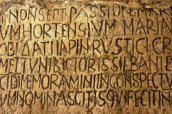

Writing for Delta: a guide to style

Delta is, according to Ofqual (the UK Office of Qualifications
and Examinations Regulation) at Level 7 on its scheme, at the same
level as a master's degree. It is also, of course, a
qualification for teachers of English. You
are expected, therefore, to be able to write accurately, accessibly
and in an appropriate style.
The study of second-language pedagogy, which is what Delta is about,
requires academic writing in a social science genre.
Some brief advice is available in the guide to writing a Background
Essay for Delta and also in the guide to writing for Module Three of
the scheme. The following applies to Modules Two and Three
equally.
This guide includes what is said elsewhere but is a bit more ambitious. It provides examples of how to write and compares them with examples of how not to write.
This is quite a long guide in twelve parts, so here is an index to what it contains. Click on -top- at the end of each section to return to this index.
| Formality | Stereotyping | Referencing | Plagiarism | Latinisms and conventions | Hedging |
| Reporting verbs | Syntax error | Misused words | Jargon | Structure | Presentation |
If you would prefer the following as a printable PDF document, click here.
 |
Formality |
- Contractions
- Unless you are citing directly or giving an example of
language use, the simple rule is to avoid contractions
altogether. So, do not write:
My students can't often remember to use contractions so don't sound natural.
and prefer:
My students cannot often remember to use contractions so do not sound natural. - Abbreviations
- Standard abbreviations in the field are acceptable but any
abbreviations that you would have to explain to someone on an
initial training course should be written in full the first
time. So, do not write:
A TTT rather than a PPP approach to the area often allows for more S-S interaction
and prefer:
A TTT (Test–Teach–Test) rather than a PPP (Presentation–Practice–Production) approach to the area often allows for more student-to-student interaction.
Never use abbreviations which simply save typing such as Ss for students, T for teacher, esp. for especially and so on.
See below for conventional Latin abbreviations which you should use. - Colloquialisms
- Using colloquialisms in academic writing is not acceptable.
Do not, therefore, write:
Learners need a bit of time to figure out the meaning of the lexis from the bits of language around it.
and prefer:
Learners need adequate time to infer the meaning of the lexis from the co-text.
Colloquial language is often prefabricated cliché. In academic writing, informal clichés should be avoided so do not write:
Uncontextualised language should be avoided like the plague.
and prefer:
Uncontextualised language should certainly be avoided.
Other more formal clichés, often conjuncts, such as by the same token, on the contrary, under these circumstances etc. are acceptable. - Comparisons, similes and metaphors
- In informal language frozen or clichéd similes are
frequently used to add spice to what is said. For example:
it went like the wind
a new approach will be like a breath of fresh air
they talk like a machine gun
etc.
In academic writing, you should avoid formulaic comparisons and make yourself clear in other ways. For example:
it went very rapidly
a new approach will be refreshing and engaging
they speak in a staccato fashion
etc.
In general, simple similes, using, e.g., like or as ... as, should be avoided although metaphor is often very effective, albeit sometimes difficult to handle. So, for example, avoid formulations such as:
The students are like those I taught in France.
or
These materials are as good as any others for this purpose.
and prefer:
These students have similar characteristics to those I am familiar with in France.
or
These materials are equally effective for this purpose.
Metaphor is, as noted, often effective but try to avoid overly colloquial expressions such as:
The students fish for the answers.
and prefer, e.g.:
Students trawl the text for the answers.
If you are in any doubt about the suitability of a metaphor you have used, delete it. - Multi-word verbs
- It is not invariably the case that multi-word verbs are less
formal than the one-word, often Latin-derived, equivalents.
Nevertheless, that is often the case so do not use multi-word
verbs where a reasonably synonymous alternative exists. Do
not write:
The learners' task is to switch the items around to make a text which holds together and is linked up.
and prefer
The learners' task is to re-order the items to make a coherent, cohesive text. - Generic and colloquial adjectives and adverbs
- While everyday, especially spoken, language is littered with
adjectives such as good, fine, great, super, OK etc.
and adverbs such as incredibly, astonishingly, fantastically,
unbelievably
etc., this is language to avoid in formal writing. Do not,
therefore, write:
This is an incredibly useful exercise which is great for getting learners to spot good collocations.
and prefer:
This is a very effective exercise which is beneficial in encouraging learners to identify appropriate and conventional collocations.
In particular, the use of incredible / incredibly, to mean, usually, good or very, is a recent innovation in English. The word properly means impossible or very difficult to believe (Cambridge International Dictionary of English, 1995)
At all events, avoid the use of meaningless adjectives such as nice and do not use fun as an attributive adjective. Do not write, therefore:
This is a nice, fun exercise which has good outcomes.
and prefer:
This is an effective, engaging exercise which has positive outcomes. - Exaggeration and understatement
- Hyperbole, or exaggeration, is common in colloquial English but jarring in
academic writing so avoid expressions such as:
There are thousands of ways to present new language.
and prefer
There is a large number of ways to present new language.
etc.
At all events, avoid ever writing something like:
This is an incredibly good technique with millions of uses.
Less often, litotes, or understatement, is used in colloquial speech for effect but is rarely acceptable in formal, academic writing. Avoid, therefore, writing, e.g.:
This learner has been living in the USA for twenty years so knows a bit about the culture.
and prefer:
This learner has been living in the USA for twenty years so is fully cognizant of the culture. - The use of the first person
- While it acceptable to use the first-person pronouns and
determiners when referring directly to your own experience,
their use in academic writing is usually disparaged. The
use of the first person can be interpreted as avoiding
presenting proper evidence, so try to
avoid it where you can. It is fully in order to write, for
example:
It is my experience, working with learners from many Slavic language backgrounds, that the accurate use of the definite article is a consistent problem which is difficult to address.
but not:
I find that my learners who speak Slavic languages can't use the definite article properly and I have found that dealing with it is hard.
Avoid stating, for example:
I do not believe that delexicalisation is a useful concept.
and prefer:
It may be argued that delexicalisation is not a sustainable concept.
First-person pronouns are often appropriate in the suggestions for the teaching section of a Background Essay or in the description of research methodology for Module Three because this is where you describe and interpret your work or experience. - The passive
- In an effort to be seen as academic, there is a tendency to
overuse the passive. While passive-voice structures are
frequently useful, not least because they remove the need for a
subject pronoun, they can be overused to the point at which it
is unclear what the subject of a verb in the parallel active
sentence would be. Avoid, therefore:
It has been seen that my students are frequently unable to use dictionaries effectively to select appropriate lexis.
because that disguises who did the noticing. Prefer, in this case:
I have noticed, by observation in class, that some of my learners are unable to use dictionaries effectively to select appropriate lexis. - Shibboleths
- A shibboleth may be defined as:
A belief or custom that is not now
considered as important and correct as it was in the past
(Cambridge International Dictionary of English, 1995).
There are two shibboleths that it is wise to avoid in formal, academic writing:
- The split-infinitive
While there is no historical or stylistic justification for derogating the use of a split infinitive, it is still generally avoided in academic writing. So, for example, avoid:
It is necessary to carefully monitor this activity.
and prefer:
It is necessary carefully to monitor this activity. - The end-of sentence preposition (also known as an
Addisonian termination)
There is also little historical or stylistic basis for disparaging sentences which end with a preposition, or which use a preposition to end a clause with, but this formulation is still considered inappropriate in academic writing. Therefore, avoid, for example:
This is a good device to focus learners on the topic with.
and prefer:
This is an effective device with which to focus the learners on the topic.
- The split-infinitive
- Gradability
- In informal speech and writing, it is common to find
adjectives which are nominally ungradable being used gradably.
For example, more unique, totally complete, completely perfect
etc.
In formal, academic writing, such uses are better avoided. - Concord
- In informal speech and writing, it is common to find
singular nouns followed by
plural verb forms and vice versa.
For example:
The class have similar aims and motivation.
The data is clear.
etc.
In more formal writing such formulations should be avoided. If you use a singular noun phrase, make sure the verb is also singular (and vice versa) so prefer, e.g.:
The group has similar aims.
The data are clear.
etc.
Concord issues also apply to quantifiers such as a range of, a variety of, a number of and so on. All of these are, in colloquial usage, often paired with a plural verb form, a phenomenon known as proximity concord because of the proximity of the plural noun to the verb, as in, e.g.:
A range of techniques are available
However, in formal writing we should be careful to maintain the grammatical accuracy of the concord and prefer, e.g.:
A variety of problems arises with ...
A range of techniques is available
The expression a number of is an exception and is almost always used with a plural verb form.
This is also the case when the subject of the verb is clearly plural as in, e.g.:
A range of languages do (not does) not distinguish between ... - Pronoun and modifier use
- In informal speech and writing, it is common to find
singular entities represented by plural pronouns in order to
avoid accusations of genderism. We see, for
example:
When a student hands in their essay.
which is not acceptable in formal writing because a singular noun should be represented by a singular pronoun. So, if you want to avoid clumsy formulations such as:
When a student hands in his or her essay.
prefer the plural:
When students hand in their essays.
Cambridge English Assessment is, incidentally, not immune to this kind of semi-literate clumsiness.
An allied point is that in colloquial language, the quantifier less serves to modify both countable and uncountable noun phrases. In more formal writing, we need to distinguish less and fewer and reserve the latter for countable noun phrases. Prefer, therefore:
There are fewer students in the group who need basic literacy training.
to
There are less students in the group who need basic literacy training. - The apostrophe
- This is a simple, well-known issue but one which is
regrettably carelessly handled in some candidates' writing.
The apostrophe denoting possessive, origin or descriptive meanings comes after the singular noun, so we get, e.g.:
the class' preference (or the class's preference, if you prefer)
the student's progress
the learner's rights
the school's materials
etc.
The apostrophe follows the plural ending in other cases, so we have:
the classes' preferences
the students' progress
the learners' rights
the teachers' material base
etc.
Only if the plural is irregular does the apostrophe occur elsewhere as in, for example:
these people's inputs into the learning process
the children's sponsors demand a syllabus which includes ...
If, in general, punctuation, including the use of the apostrophe and mysteries such as the semi-colon, is giving you trouble, consult the guide on this site to their correct usage linked in the list of related guides at the end.
Stereotyping |
There is a temptation to pigeonhole learners which is worth avoiding.
Most of us are quite sensitive to casual sexism or racism but
less perceptive when it comes to classifying learners by
nationality, culture or personality.
Statements such as the following should be avoided without clear and
careful justification for them (and for some, there is no obvious
justification which could be proposed):
- These learners generally have a mix of auditory and kinaesthetic learning styles
- because the whole area of learning styles theories has been comprehensively debunked and even if there were any truth in the theories, this is still unacceptable stereotyping because we all have a mix of learning preferences.
- Asian learners may be less willing to take risks
- because this describes all learners from Istanbul to Vladivostok and Northern Siberia to New Guinea, some 4 billion people with hugely varying first languages, cultures and histories. It is the case that some cultures are more or less risk averse and have more or less extreme power distances and so on but you need to be precise and aware of the exceptions and variations.
- Germans tend to expect teachers to be authoritative
- because this borders on racism by proxy of nationality and cannot possibly describe every person of that nationality.
- Arabs are accustomed to learning by rote in schools
- because this assumes that all Arabic speakers, around 250
million people, share an educational culture and that within
those cultures no variety exists. It is worth remembering
that Arabic is better described as a macro-language or a
language group because many varieties are not mutually
comprehensible. The differences between varieties of
Arabic are as great as the differences between, e.g., Spanish
and Portuguese or German and Dutch.
Cultural differences across the nations which use a variety of Arabic are very marked.
and so on.
The morals are do not assume that:
- nationality and first-language invariably coincide (although they often do)
- those members of a culture you have encountered are representative of all its members
- language and cultural borders are contiguous
- you can classify all learners by continent, area or nation
Be careful because casual stereotyping like this has no place in our profession.
Referencing |
Nobody expects you to originate everything that you discuss in
any part of the Delta course. It is inevitable, therefore,
that you will be referring to authority as you write and presenting
the ideas of other people.
You will need to make sure that the in-text referencing and the
bibliography follow a standard convention.
For details, go to a website for advice. There’s a good guide
to the Harvard referencing system
produced for Anglia Ruskin University that you can access
at https://libweb.anglia.ac.uk/referencing/harvard.htm.
For in-text references
- Books and articles
- At every point in the text where there is a particular
reference, include the author’s surname and the year of
publication with page numbers if you are quoting specific words
– for example:
In his survey of the social habits of Delta tutors, Bloggs (1998) refuted that ...
or
In his survey of the social habits of Delta tutors, Bloggs (1998: 19) states that, "I can assert without fear of successful contradiction that …"
Make sure that it is 100% clear where your writing stops and a quotation begins, either by using inverted commas or indenting the citation etc. - Websites
- You may not know the author’s name or date (but give them as above
if you do) so this is acceptable:
It has been suggested (Wikipedia (2013)) that …
For the bibliography
For ease of access, you may like to divide your bibliography into Books and Articles, Teaching Materials and Electronic resources.- Books
- List references in alphabetical order by the surname of the
first author. If the author is unknown you should use
“Anon”
For up to three authors include all names; if there are more than three, give the first author’s surname and initials followed by et al.
Provide, in this order and format: Author surname/s and initial/s + Ed. or Eds. (if editor/s), Year of publication, Title in italics, Edition (if not the first edition) as ordinal number + ed., Place of publication: Publisher
For example:
Jones, D, ed., 1995, My Teaching and Other Fiascos, 5th ed., London: Concourse publications - Articles
- Include also: full journal title, volume number (issue number) and
page numbers, for example,
Bloggs, T, 1997, Developing fluency through ferret keeping, English Language Teaching Journal, 41, 3 pp. 18-83 - Electronic resources
- E-journals – include full URL and date of access, for example:
Bloggs TA & Brown GC, 2012, Spoken English in Weston super Mare, in The Wandering Linguist [online], p. 105. Available from: http://www.wanderling.com/1111 [Accessed 23/08/2017] - Websites
- Supply author/s or corporate body, date of publication /
last update or copyright date, available from: URL [Accessed
date], for example:
eltconcourse.com, How to write a Delta Background Essay, available from: https://www.eltconcourse.com/this page [accessed 02/11/2017]
or:
Bloggs, T, (no date), Ideas for a Creating a Happy Classroom, available from http://eltconcourse.com/training/happiness.pdf [Accessed 03/07/2017]
Avoiding accusations of plagiarism |
Plagiarism is a form of fraud. It can be defined as presenting someone else's work, thoughts or words as if they were yours. Downloading and using unacknowledged material from the internet is included, of course.
- You are expected to do wide reading and research on the Delta course so never be afraid to show that you have accessed a range of other people’s work – nobody is expecting you to originate all the ideas and information in your work.
- Read your assignments and check whether everything that is not entirely in your own words or from your own resources has been acknowledged.
- Make sure that you include in your bibliography anything you refer to in the text and exclude any reading to which you do not make explicit reference. This includes materials that you put in appendices and use in lessons and plans, by the way.
- Don’t be tempted to think that if you have changed a few words from a source you have read that you don’t need to acknowledge it – you do.
- Even if you paraphrase to the extent that the author's original words are drastically changed, the idea is still not your own. Reference it.
- If in any doubt, reference it.
|  |
Latinisms and conventions |
Using abbreviations derived from Latin is a feature of most academic writing and you should be aware of and use the most common ones. However, using them wrongly is deeply unimpressive. Here, the examples are all in italics. In your writing, only the Latinisms should be, except where noted for the first two items.
- i.e.
- means that is, being the abbreviation of the
Latin id
est. It should not be confused with e.g.
Use it to link parallel ideas as in, for example:
All the students are at approximately the same pre-intermediate level, i.e., A2 on the CEFR.
This abbreviation is not usually italicised. - e.g.
- means for example and is the abbreviation of the
Latin exempli gratia. In full, it should be
written as for example and not the overly colloquial
for instance or say.
This abbreviation is not usually italicised. - cf.
- means compare with or consult, being short
for conferre. In Latin, it was an invitation to
the reader to consult an alternative source to compare with what
is being said. In English, it usually simply means
compare. Use it to direct the reader to compare
something else in your text as in, for example:
One student has little instrumental motivation (cf. comments above concerning the course aims in general). - et al
- means and others and comes from the Latin et alia.
Use it in in-text references after the first author when there are more than three authors.
For example:
(Smith et al, 1997:14) - et seq.
- This is the Latin abbreviation for et sequens and
it means and what follows. It is used to direct
the reader to a page or paragraph in a text and note that this
is where the relevant section starts. For example:
See Smith, 1992:350 et seq. - sic
- This is the Latin for so or thus. If
you want to quote something that is incorrect or oddly phrased,
use this in brackets after the words or phrase to show that this
is how it appears in the original text. That way, the
reader will not think it is your mistake. Do not correct
anything that you are citing directly. For example:
The teacher in the home institution informed us that "this class are mixed of reading level (sic)". - viz.
- is the usual abbreviation for videlicet which means
namely, that is to say or it may be said. It should,
in theory, not
be confused with i.e. although most writers use them
interchangeably. Use viz. when you want to give
more detail or be more exact. For example:
Most students in the group have similar motivations for learning English, viz., to study in an English-speaking institution. - q.v.
- stands for quod vide, which means which see
and
refers to a term that should be looked up elsewhere in a
document. It is often used for cross referencing.
For example:
The end-of-course test includes two items which appear in the pre-course test (q.v.) for comparison purposes. - ibid.
- stands for ibidem, Latin for in the same place, and is used in citations
to refer to the immediately preceding citation. For example:
Jones (ibid.) - op. cit.
- stands for opere citato, Latin for in the work cited. It is used to refer to any
previously cited work, not just the last one. For example:
Jones (op. cit.) - pace
- means something like With all due respect to
and is used by authors to show respect for the holder of a view
with which they disagree (often disrespectfully). For
example:
It does not seem from my experience that (pace Smith, 1994:200) the problem arises from over-generalisation.
- passim
- means very approximately throughout or
frequently and refers to an idea or concept that occurs in
many places in a cited work so a particular page reference is
inappropriate. For example:
(Smith, 1994, passim)
Conventions
There are some conventions you should use in your writing:
- Place * before any malformed or erroneous
utterance, like this:
*I go yesterday - Place a ? before any questionably correct
formulation, like this:
?There are less people here
(Combining * and ? indicates a form which is almost unacceptable.) - Use italics for examples of language use and language items,
like this:
The modal auxiliary verbs might and could are polysemous. - Use brackets around any optional items in a form, like this:
Help her (to) do it - Use AmE and BrE to refer to American Standard and British Standard English.
- Use slash marks around phonemic symbols and transcriptions,
like this:
The expression like this is transcribed as: /ˈlaɪk.ðɪs/
(Note the use of ‘ˈ’ before the syllable to mark the main stress. Use ‘ˌ’ to mark a secondary stress. So, for example, the word unbelievably is transcribed as:
/ˌʌn.bɪ.ˈliː.və.bli/
with the secondary stress marked on the first syllable and the primary stress marked on the third syllable.) - Use square brackets around phonetic symbols, like this:
The allophone in English of /l/ (the light /l/) is the dark sound at the end of, e.g., lull, transcribed as [ɫ]. - Use either a raised schwa or a mark below the consonant to
mark syllabic stress, like this:
The word responsible can be transcribed either as: /rɪ.ˈspɒn.səb.l̩/ or as: /rɪ.ˈspɒn.səb.ᵊl/.
Hedging |
The purpose of hedging what you say is to avoid challenging the reader to think of all the times that you are probably wrong. Here are some guides to how to do it:
- Modal auxiliary verbs
- The central modal auxiliary verbs, could, may, might,
would are common hedges.
Three marginal modal auxiliary verbs also play a role and these include seem to, tend to, be likely to.
Other modal auxiliary verbs make you sound too assertive and the reader may well feel challenged to disagree. Therefore, avoid, for example:
This must be because ...
This has to be a result of ...
This can't be an example of ...
etc. and prefer:
This could easily be because ...
This may, quite arguably, be a result of
This might be an example of ...
or:
This seems to be because ...
This tends to result from ...
This is likely to occur if ...
The modal auxiliary verb would is a versatile and useful one in functioning to distance you slightly and make what you write appear suitably hedged so avoid, for example:
I argue that ...
and prefer:
I would argue that ... - Modal adverbs and adjectives
- Avoid being too assertive in the use of adjectives and
adverbs. Doing so simply challenges the reader to think of
all the times you are wrong. So, for example, do not write:
It is certain that ...
Students always ...
Learners invariably ...
There is an obvious tendency to ...
and prefer:
It is (clearly) arguable that ...
Students frequently ...
Learners very often ...
There is a perceptible tendency to ... - Boosters and Downtoners
- Boosters are commonly used in informal speech to add
strength to a message but should be used sparingly in academic
writing. Try to avoid, therefore, adverbials such as
invariably, extremely, astonishingly, definitely, certainly, of
course, predictably etc.
Downtoning adverbials are, on the other hand, common in good academic writing to present a modest case so be unafraid to use, e.g., usually, frequently, arguably, in my experience, from experience, in this case etc. - Modal nouns
- Although these are less frequently used, their misuse or
non-use is
most glaring. Again, they challenge the reader to think of
times when what you say is not the case.
For example, avoid writing:
The fact is that ...
or
The truth of the matter is ...
and prefer:
The supposition is that ...
or
The (strong) possibility is that ... - Verb forms and tenses
- Anything stated in the present simple usually carries
the connotation that you believe something to be invariably the case.
So, unless this is what you mean, avoid:
Speakers of Romance language use single-word verbs instead of multi-word verbs
and prefer:
Speakers of Romance language (may) tend to use single-word verbs instead of multi-word verbs.
For more on hedging in EAP, see the guide linked in the list of related guides at the end.
Reporting verbs |
This is an area in which you need carefully to read what the authority you are citing really said. There are three important points to consider:
- What was the author doing?
Signal the quotation by stating the nature of the work you are citing because this shows you have understood the author's intentions.
For example:
In her review of methodology Woodward states, ...
In an article criticising this approach, Williams asserts, ...
In the teacher's book for this set of materials, the authors are clear that, ...
and so on. - What function was the author performing?
This is where the choice if reporting verb is crucial.
For example, if you are reporting that a writer is agreeing with another authority, it is an error to state:
Smith clarifies this view by stating, "..."
because the verb should be something like supports, concurs with or endorses.
In other words, make the function match the verb and vice versa.
More examples are:
Jones suggests that ...
Harris notes that ...
Elgin summarises the issue as ...
Smith asserts that ... - What level of certainty is being suggested?
In other words, what is the author's stance and how are you signalling it?
For example:- speculating or suggesting, in which case use, for example:
- Smith suggests ...
- Jones postulates ...
- Guru implies ...
- discussing or examining, in which case use, for example:
- Smith notes ...
- Jones sets out ...
- Guru comments ...
- claiming or asserting, in which case use, for example:
- Smith claims ...
- Jones shows ...
- Guru proves ...
- speculating or suggesting, in which case use, for example:
You also need to use a range of reporting verbs when you cite or paraphrase
authority. Avoid always writing, e.g.:
Jones (1990:230) states, "..."
or
Jones (1990:230) says that "..."
and consider something more accurate and meaningful such as:
Jones (1990:230) cautions us that "..."
or
Jones (1990:230) observes / notes / makes the point that "..."
For more on a range of appropriate reporting verbs, see the guide to reporting verbs in EAP linked in the list of related guides at the end. This diagram is taken from that guide.

When you cite a source, it is useful to consider which reporting verbs will best express the level of certainty that the author intended.
For a list of reporting verbs classified by the functions they perform, click here.
Reading critically |
In all you write for Delta, you are expected to draw on authority. That does not absolve you of the need to think, sometimes.
The authors you cite may well know more than you (about some
matters) but they are not necessarily, or even probably, cleverer or
more insightful than you.
So, if you see an internal inconsistency, a contradiction, an
unsupported assertion or simply something which does not seem
logical or consistent with the data you have, do not be afraid to
point it out. Do the same if and when you discover that two or
more authorities you have consulted disagree about something and
then include what you think. It shows you are reading
critically and not allowing yourself to be intimidated by the views
of someone lucky enough to get themselves into print.
That, of course, applies equally to what you access in printed form,
from presentations at training and conference sessions, on the web
and from this site.
 |
Syntax error |
Perspicuity, n. lucidity, clearness of
style or exposition, freedom from obscurity.
The whole point of avoiding grammatical faux pas is make
sure that your writing is clear and accessible. Forcing the
reader to rephrase for you and correct the grammar in order to
retrieve your intended meaning is poor practice and reduces the
credibility of what you write. It also irritates the reader.
When you write at this level, your intention, presumably, is to
persuade the reader that you have mastered your topic area and write
from authority.
Very little undermines this impression as much as errors in syntax,
lexical choice and grammar. You are, after all, a teacher of
the language and you should be able to write it effectively,
accurately and clearly. All written work at this level must
be free from errors, typographical or otherwise.
Here is a selection of the usual issues to avoid.
- The run-on sentence or comma splice
- Joining what should be two sentences with a comma (or not)
creates a run-on sentence which is clumsy and unclear. For example:
We can also use shall with the future perfect simple and continuous forms, this however, is usually a matter of formality.
in which we have two different subjects for different verbs. The sentence should be re-written as two separate statements:
We can also use shall with the future perfect simple and continuous forms. This is, however, usually a matter of formality.
Often less satisfactorily, you can use the semi-colon or a dash to separate the clauses:
We can also use shall with the future perfect simple and continuous forms; this is, however, usually a matter of formality.
We can also use shall with the future perfect simple and continuous forms – this is, however, usually a matter of formality.
There is a guide to how to avoid comma splices on this site linked in the list of related guides at the end. - Using conjuncts as conjunctions (or vice versa)
- A conjunction joins clauses, either to coordinate or
subordinate, and is integral to the resulting compound or
complex sentence, but a conjunct links separate ideas, often in
separate sentences but always in separate clauses. Using a
conjunct as if it were a conjunction makes another form of
run-on sentence. For example:
These learners will have to use English in the workplace, moreover, they will need to operate in an English-speaking society.
in which the word moreover has been used as if it were a conjunction. It is not, so the sentence should be re-written. This can be achieved either by- using a proper coordinating conjunction used to create
the compound sentence into which the conjunct can be
inserted. For example:
These learners will have to use English in the workplace and, moreover, they will need to operate in an English-speaking society.
or - as two separate sentences with the conjunct
performing its proper function. Like this:
These learners will have to use English in the workplace. Moreover, they will need to operate in an English-speaking society.
or
These learners will have to use English in the workplace. They will, moreover, need to operate in an English-speaking society.
- using a proper coordinating conjunction used to create
the compound sentence into which the conjunct can be
inserted. For example:
- enumerate (firstly, finally)
add (moreover, furthermore, additionally)
signal exemplification (for example)
signal apposition (in other words, by which I mean)
sum up or conclude (in conclusion, to sum up)
show results (consequently, as a result, therefore, in view of that)
replace (alternatively, instead)
express an opposite meaning (in fact, indeed, on the other hand)
concede (however, at any rate)
equate (likewise, similarly)
All the examples given here are conjuncts, not conjunctions. - There is a guide to conjuncts on this site linked in the list of related guides at the end.
- The hanging or dangling participle and prepositional phrase
- A dangling participle is usually defined as one for which
there is no obvious subject for the verb. For example:
Talking to my students they tell me that they need more listening practice.
Here, the reader is forced mentally to adjust the sentence to discover who is talking to the students. It would, therefore, be better phrased as, for example:
When I have canvassed my students' views, they all report that they believe they need more listening practice.
Readers of a text will expect the subject of a verb to be the closest appropriate noun phrase to it. So, for example, in:
Using top-down strategies in combination with bottom-up strategies, learners can infer some of the meanings of unknown lexical items.
it is clear that it is learners who will use the strategies even though the subject of the verb is separated by nine words from the verb (using). However, in this sentence we have a hanging participle:
Reading my students' essays, it is clear that they use a limited range of appropriate adjectival phrases.
in which the reader has to sort out who is doing the reading and who the using. The sentence needs re-writing as, for example:
Reading my students' essays, I have noticed that they use a limited range of appropriate adjectival phrases.
in which the proper subject of the verb has been inserted so it is clear who is doing the reading and who the using.
This also happens, less frequently, with the past participle as in, e.g.:
Brought up and educated in Greece, his writing tends to be inaccurate in terms of orthography
which seems to imply that his writing was brought up and educated in Greece rather than the student.
It would be better phrased as, e.g.:
Brought up and educated in Greece, he has difficulty with accurate use of orthography and spelling.
where it is clear who was brought up and educated in Greece.
There is a guide to avoiding dangling participles on this site linked in the list of related guides at the end.
An allied grammatical faux pas is the dangling prepositional phrase. For example:
At the age of 25, her formal education is now complete.
which appears to imply that her formal education is 25 years old and that is not what the writer means. Much simpler and clearer would be:
She is 25 years old and her formal education is now complete.
Misused words and homophone corner |
There are many of these and a complete list would fill a small
book.
In what follows there is occasional reference to differences in
English-language varieties, especially American English (AmE) and
British English (BrE). Whichever variety you use, be
consistent.
Here are some favourite confusions and misuses to avoid:
- adverse and averse
- The adjective adverse means harmful as in, for example:
This may have an adverse effect on learning.
The adjective averse means disliking as in, for example
My students are averse to taking risks in public. - affect and effect
- The verb affect means to change. The noun effect
refers to the result of a change. More rarely, the verb
effect means to bring about a change.
So, for example, we can have:
The setting may affect learners' motivation.
The setting's effect on the learners' motivation was negative.
In order to effect a change in the learners' motivation, the setting needs to be changed.
By the same token, the adjectives, affective and effective, mean different things.
The first refers to changing someone's emotional state as in:
There are a number of affective factors in the plan to take into account.
The second means successful in producing the result you want as in:
This is an effective consolidation activity. - aural and oral
- These two words are pronounced the same (as /ˈɔː.rəl/) but the first refers to listening and the second to speaking. To distinguish, some people pronounce the first as /ˈaʊ.rəl/.
- born and borne
- These are pronounced the same but the first refers to
having started life and the second means carried so do not
write:
The marker for singular, third-person subjects is born on the verb suffix.
and prefer:
The marker for singular, third-person subjects is borne on the verb suffix. - chord and cord
- The first of these refers to a group of musical notes but the second is the one you should use to refer to the vocal cords which contribute to voicing of a consonant because it means a length of something like string or rope. It is nowadays more accurate, some aver, to refer to vocal folds.
- communicative and talkative
- The term communicative does not only apply to spoken language so do not confuse it with oral. If you mean that some learners do not talk much then say so rather than imply that they do not communicate.
- complement and compliment
- The first of these refers to the grammatical item which completes a phrase as in, for example, the complement of a verb. The second means praise. Both can be nouns or verbs.
- continual and continuous
- The first of these means recurring regularly as in, e.g.:
He continually makes mistakes with past-tense endings.
The second of these means unceasing or non-stop as in:
She talked continuously and without interruption.
A class into which new students arrive regularly should be described as having continual enrolment, not continuous enrolment, whatever the school prospectus may say. - discreet and discrete
- The first of these adjectives means without attracting
attention as in, for example:
I try to monitor discreetly.
The second adjective means separate and distinct as in, for example:
A discrete-item test was administered to assess the students' ability to distinguish these phonemes. - disinterested and uninterested
- The first of these means impartial or unbiased
as in, for example:
The tests were marked anonymously by disinterested markers.
The second adjective means bored or not engaged as in, for example:
These students would be uninterested in a text about kangaroos. - elicit, illicit and evince
- The first verb means to draw out by questioning or other
means as in, for example:
The task naturally elicits the past perfect form.
The second is an adjective meaning illegal.
The verb evince is not the same as elicit. It means to show clearly or demonstrate as in, e.g.:
The test results evinced the learners' unreadiness to take the examination. - ellipsis and elision
- Ellipsis is a syntactical phenomenon in which a word or
phrase is omitted because it is known and can be recovered
uniquely. For example, in:
John can’t help but I can.
we have ellipsis in the second clause of the verb help because it is clearly recoverable by the listener or reader. Technically, ellipsis can only refer to an element that is uniquely recoverable so, for example:
I liked the shirt so I bought three.
is not an example of ellipsis but of the omission of an object phrase. There are a number of possible items which have been omitted: of them, shirts, items, types, colours etc. An alternative is to call this substitution by zero or substitution of the noun phrase by the determiner three. The verb is ellipt.
Elision is a phonological phenomenon in which a sound is omitted in normal or rapid speech. For example, the word secretary may be pronounced /ˈse.krə.tə.ri/ or, eliding the third vowel sound, as /ˈse.krə.tri/. Consonants, too, are frequently elided from clusters as in the pronunciation of glimpse as /ɡlɪms/ with elision of the /p/. - imply and infer
- The first of these means to suggest as in, for
example:
The evidence strongly implies that the students need more practice in this area.
The second verb means to reach a conclusion as in, for example:
Learners can infer the meaning from the co-text. - insure and ensure
- In British English, the first of these words refers to
protecting something with a policy that will indemnify you in
the event of loss or damage (hence an insurance policy).
The second of this pair means to make certain of something.
For example:
To ensure that students are working alone on the task, I separate them physically in different parts of the room.
In AmE these verbs are sometimes used interchangeably.
The word assure, incidentally, means to promise. - invariably and usually
- The first adverb means always, without variation or
exception.
The second does not. Beware the use of the first of these
because you are setting yourself up for the reader to think of
an exception. For example, writing:
Two clauses joined by the coordinator and can invariably be reversed.
invites the reader to object:
What about "Bring the food and I'll cook the dinner"? - it's and its
- If you are obeying the rule not to use contractions in
formal writing, the first of these should never occur.
It's is an abbreviation of either it is or it has.
Its is the possessive modifier for the pronoun it.
Correct, therefore, are:
The activity has its uses in this respect.
and
It's been demonstrated that ...
Wrong, therefore, are:
*The activity has it's uses.
and
*Its been demonstrated that ... - nor
- That the word nor is paired with neither
is not a mystery so we are all happy to accept, for example
He neither noticed the mistake nor corrected it
The problem comes when we have a sentence such as
He didn’t notice the mistake nor correct it
which is wrong because the negation of the first clause is carried forward to negate the second verb phrase, making, in effect, a double negative, so it should be
He didn’t notice the mistake or correct it
The rules are:- When the second item is a verb
phrase, a noun phrase,
an adverb phrase or an adjective phrase then use or,
not nor, so we get:
She hasn’t eaten or drunk anything
He didn’t study French or German at school
She never went happily or quickly
The pie wasn’t well cooked or hot enough - When the second item is a full
clause, negation needs
to be reiterated because it cannot safely be assumed to
carry on from the first clause, use nor, not or:
The teacher didn’t notice the error, nor did anyone else correct it.
My students weren’t late to class and nor were most of their colleagues
She didn’t come happily to the theatre, nor did she enjoy the play when she got there
and in the third example, we have the inversion of operator and verb in the second clause.
- When the second item is a verb
phrase, a noun phrase,
an adverb phrase or an adjective phrase then use or,
not nor, so we get:
- on behalf of and on the part of
- The term on behalf of means for or
representing as in, for example:
One student speaks on behalf of the group.
The term on the part of means done by, responsible for or carried out by as in, for example:
The silence on the part of the teacher in this methodology may sometimes disorientate the learners. - ones and one's
- The pronoun ones is the plural form of one
and one's is the possessive modifier of the impersonal
one.
Correct, therefore, are:
One should be careful with one's grammar.
and
I select the easier ones.
Wrong, therefore, are:
*One should be careful with ones grammar.
and
*I select the easier one's.
In AmE, the pronoun one is often followed by a personal pronoun as in, e.g.:
One should look after his belongings.
In BrE, that is considered wrong and should be:
One should look after one's belongings. - phase and faze
- The first of these is a noun or verb referring to the stage of
something or a verb referring to the staging of a procedure.
For example:
This phase of the lesson is designed to provide formal practice (q.v.) of the usage (q.v.) of the tense.
or
The target lexis will be phased in over a series of three lessons.
The second of these is a verb only and means to confuse, discomfort or bewilder. For example:
These learners are sometimes fazed by being asked to provide a spontaneous opinion.
The verb is informal, best avoided and almost always, incidentally, used in the passive. - phonetic and phonemic
- The first of these applies to the study of all human
language. The International Phonetic Alphabet contains 107
symbols and letters, 31 diacritics and 19 additional signs to indicate
sounds which the human voice can produce. You are not
likely to be analysing anything with this level of detail.
What you are interested in is phonemic analysis which applies to only one language, English. To do that, you will need the 21 ways of representing the vowels and the 24 consonant symbols. You may need a few bits and pieces such as syllabic consonant markers, the glottal stop and stress marks but that's all. - plethora
- does not mean large range; it actually means a larger amount
than necessary so if you write, e.g.:
There is a plethora of coursebooks on the institution's shelves.
you are actually saying
There are too many coursebooks on the institution's shelves.
The word is, incidentally, a mass noun so *there are a plethora is always wrong, whatever you mean. - pour over and pore over
- The first of these refers to putting ketchup on your chips. The second verb is the one to use in, e.g., pore over a text (study).
- practice and practise
- If you are writing in AmE, the only word you need is practice as this does service as a noun and a verb. In BrE, on the other hand, the verb is practise and the noun is practice. The same applies to license / licence but AmE uses the first of these for both grammatical functions.
- principal and principle
- The first means most important and the second refers to a fundamental rule. It is possible, therefore, to have the principal principle to mean the most important basic rule (but don't).
- support, help and scaffolding
- The term scaffolding is not simply a sophisticated
way to mean support. The term derives from
Vygotsky, originally, and refers to the stage of learning in
which the learner can almost but not quite achieve a task
without help. This is the Zone of Proximal Development.
The term support is often simply synonymous with
help.
There is a guide to scaffolding and the ZPD on this site (new tab). - usage
- is not a more sophisticated way to say use.
In language teaching, it refers to formal accuracy rather than
communicative use. For example:
Usage will be the target of the first two phases (q.v.) of the lesson and use will be tackled later. - whose and who's
- whose is the possessive relative pronoun and wh-question word:
Whose money is that?
She's the woman whose house I painted
who's is the contracted form of who is / who has (and should, therefore, be avoided in formal writing):
Who's lost the money?
Who's laughing?
A fuller list of potentially troublesome homophones in English is available by clicking here.
 |
Jargon and terminology |
Jargon may be defined as the use of language specific to a field or group of professionals. Its use is, therefore, not only acceptable, but required. In fact, some jargon is designed to lock out non-professionals from a particular field of enquiry.
Jargon, or terminology, often represents a specific meaning attached to some words and phrases which differ from the ordinary, everyday use of the word. For example, genre in lay terms refers to a specific type of artistic work, such as science fiction or impressionism, but in text-type analysis to something much more precisely defined. The terms usage, aspect, conditional, subordinate, communicative, marked, structural, contingency, passive, covert, connotation and many others are used in specific ways which differ from how they are used in non-technical domains. Make sure you know what they mean because using them in their everyday instead of technical sense can confuse and irritate the reader. It also reveals that you are ignorant of the specific, technical meaning.
On the other hand, the overuse of terminology, especially if you fail to define what specific authors mean by the terms you use can be equally frustrating and irritating.
As has been noted when considering abbreviations (a subset of jargon), you need to define all the terms you use if they would be unfamiliar to someone on a pre-service training course such as CELTA. For example:
One use of the present perfect progressive
less commonly taught at this level is for the iterative aspect
(referring to repeated actions) as in, for example:
People have been taking a shortcut
through my garden to the pub.
In which the tense form is marked (i.e., distinguished from the
simple form) to emphasise the repetition of an event.
Here, the writer has not defined the tense description (because that has already been done in the analysis of form) but has defined the word iterative because this is a technical term unlikely to be familiar to non-specialists and defined marked because the word is being used in a technical sense rather than its everyday one.
 |
Structure |
This is not the place to discuss the overall generic structure of
your writing. That is covered elsewhere and generally concerns
the big picture in terms of information staging and how that differs
between, say, an information report and a discussion.
You should follow the links from the Delta index to discover more
about how the
overall structure, and with it the coherence of your text, is best
achieved.
You cannot, however, hope that coherent structure will somehow
magically evolve from your writing so a few basic rules are
important.
- Rule 1: Headings, subheadings and relevance
- Within any piece of extended academic writing, readers will
expect to be able to navigate through the text by following
clues that you provide. Most of these will come in the
form of headings and subheadings.
As you write, make sure you use these devices but also keep an eye on the content of the heading and maintain relevance. If you are getting off the topic, perhaps it is time for a new subheading. - Rule 2: Topic sentences
- Readers also expect that the first sentence of each paragraph will reflect that paragraph's content. When you come to proofreading your text, check that this is the structure of each paragraph. If it is not, it is time to re-write or rearrange.
- Rule 3: Bullets and lists
- Use bullet points sparingly and not as a substitute for connected
prose. Lists and tables are helpful but you must discuss their
content.
Numbered lists may often imply some kind of prioritisation but bulleted lists do not. However, numbered (or lettered) lists are convenient if you want to make internal referencing because they avoid the need to refer to, say, the fourth bullet point above, or whatever. - Rule 4: Cohesion
- Coherence is maintained by a combination of understanding
the generic structure that you are aiming for
and a combination of Rules 1 and 2. Cohesion is maintained
by making sure that conjunctions and conjuncts are used in the
way you intend and lead to the connections you want to make.
As you proofread, keep asking yourself if this is invariably the case. If cause and effect is the link you want to make, for example, are you using structures which allow that to be clear to the reader? If, on the other hand, exemplification is what you want to signal, how have you signposted that?
Cohesion can be enhanced by careful use of shell nouns (to which there is a guide on the site, linked below). Briefly, shell nouns such as problem, idea, issue, fact, information, difficulty and so on allow you to encapsulate a number of propositions in the shell of the noun. Thereafter, you can simply refer to this or it to direct the reader to all the propositions within the shell. - Rule 5: Get someone else to read your work
- When you proofread your own work you may read what you thought you wrote rather than what you actually wrote. Someone else won't. You can simulate this effect by reading your text aloud to yourself. Infelicities, lack of coherence and cohesion and other faults become more apparent that way.
Presentation |
Most centres and institutions will have rules about how you need
to present your work including the niceties of typefaces, line
spacing, margin widths and other requirements. You
need, of course, to follow them.
Even if your institution does not do this, at the very least, insert
a header and footer identifying the document and its author and use
page numbering.
For Module Three of the Delta, the following are required and the
same sort of presentation should be used for all written work for
Module Two as well.
- 2.5 cm. margins all round
- a title page with your identifiers (candidate number and centre number included)
- a contents page
- page numbering throughout
- a footer with your name, candidate number and the title
- no footnotes
Avoid quirky and hard-to-read or childish typefaces such as Comic Sans MS and stick to popular, serious-looking fonts such as Arial, Tahoma, Times New Roman or Calibri.
If you would like this guide as a printable PDF, click here.
| Related links | |
| hedging and modality in EAP | the guide to ways to hedge, use appropriate modality and appear less dogmatic in academic writing |
| reporting verbs in EAP | the guide to making the verb match the writer's intention and level of certainty |
| shell nouns | for the guide to how these nouns can enhance cohesion |
| avoiding comma splices and run-on sentences | for more if you are prone to these |
| avoiding dangling participles | for more if you are prone to these |
| spelling in English | even if you are using a spell checker in your writing, it may pay to look at the commonest spelling rules in English |
| conjuncts | and how they differ from conjunctions as well as the functions they perform |
| punctuation | go here if the area gives you trouble |
| things to avoid writing | for a much shorter, 10-point aide memoire to writing for Delta |
| The Delta index | for everything else |
Reference:
Proctor, P (Ed.), 1995, Cambridge International Dictionary of
English, Cambridge: Press Syndicate of the University of
Cambridge